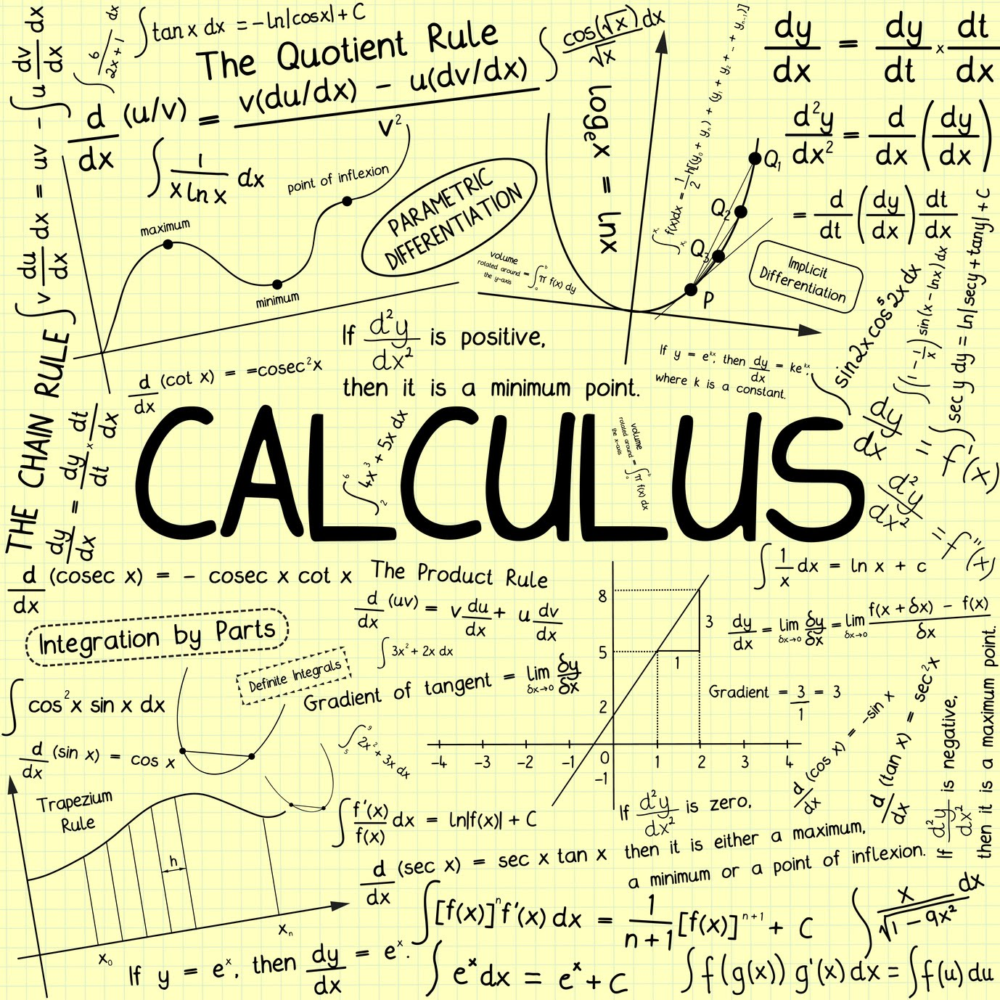

Here is some information about my extra-curriculars, experiences, and passions.
Soccer |
Growing up in a Middle-Eastern household, soccer was always a big deal, and we would always tune in to the World Cup and other soccer events. The sport grew on me as I aged, and I ended up joining the JV soccer team for Sterling Heights High School in 9th grade. I started off as one of the worst players on my team, but over the course of the season and many hours of ruthless practice, I became a much better soccer player and contributed to the team much more. |
|
Swimming |
Like most other kids, I have always felt drawn to the water, and loved when I went on vacation with my family and had a lake or pool to swim in. Between the Fall and Winter of 9th grade, during the gap between seasonal sports at school, I decided to head over to my local gym and start practicing swimming, with the goal of joining my school's swim team in the winter. I ended up really enjoying swimming, and made some of my best memories and met a lot of amazing people on my swim team in 9th grade. I plan on pursuing swimming throughout all of high school, with the hopes of beating the school's 100 yard backstroke record. |
|
Robotics |
After being on the Robotics team for 3 years in middle school, I decided to join the high school robotics team in 9th grade. This was a great decision as the large team of over 50 people felt like family despite the size. As a freshman on the programming subteam, I wasn't assigned much work to do on the actual robot, but was getting better at coding every meeting I attended with the goal of improving our robot next year, when I am experienced enough to be trusted with putting code on the actual robot. Team 818, our robotics team, performed outstandingly at the Rochester event, and made it to finals. We were awarded with the medal attached to the right for our robot's performance. |
|
Math |
Ever since I was a toddler, I've loved math. In the second grade, despite being a rather mischevious kid, my teacher recognized this, and had a talk with me about skipping a grade in math. I took this offer, and breezed through math that was supposed to be difficult even for kids a year older than me. My interest didn't wear down, and by 5th grade, I used to present unique ways to multiply 3-digit numbers to my class and similar math tricks that I found on the internet. This interest carried over into middle school, where even in the Middle School Math Science Technology Center (MS2TC), in a classroom full of mathmatically talented kids, I still stood out. During the summer between 8th and 9th grade, I completed the entirety of the Algebra 2 course on Khan Academy over the course of a couple weeks with no real motive other than learning new math concepts. This didn't satisfy me though, as the more I learned, the more I realized there was to learn. Thus, during 9th grade, I developed in interest in Calculus and since my 9th Grade math teacher also teaches AP Calculus BC to the 12th Graders, I regularly took an extra copy of their Calculus homework and did it solely for enjoyment. In the Fall of 9th Grade, I got a 285 on my math NWEA which is already a very high 99th percentile score, but I blew that score out of the water in the Spring of 9th grade where I scored a 298, leaving myself very happy by how much I have grown. |
 |
Programming |
When I was a toddler, my aunt asked me what I wanted for my birthday. I told her I wanted batteries. She laughed and agreed, as my family knew I liked collecting different technological items. This interest never died out, and eventually led me to build my very first computer at the age of 11, and code my first video game at 12. As a 12-year-old, when the Coronavirus struck and we went into quarantine, my friends and I didn't know what to do. We tried different things and since we only really had access to digital projects, we made many videogames and learned how to code, 3D model, and many other computer skills. This led all of us to join our school's robotics team in 9th grade, and even outside of robotics and after quarantine ended, we still get together and make games together occasionally. |